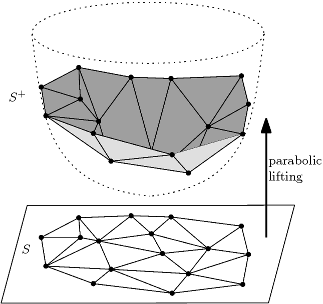

I made an update to my Delaunay triangulation post recently, as I realized — rather embarassingly — that both predicates I derived originally were wrong. Although the original post has been updated (it was still in draft anyways), I wanted to write a quick post to to note that these predicates have been fixed and to explore some further use cases for the predicates that weren't considered in the original post.
To start regaining the trust of my two readers, here's a shadertoy I made proving the new predicates work. Although you, the reader, may forgive me I may never forgive myself.
I want to try to implement more of these algorithms before writing them up, but at the same time for several reasons it would be difficult to completely implement and test these things and that's not really my point with this blog. So what I mean to say is, take all these posts with a grain of salt.
With that said, here's another possibly shit algorithm.
My main point in this post is to argue that an existing popular Delaunay triangulation algorithm (the lifting method) can be modified to use coordinate-free formulae to yield yet another distance-based Delaunay triangulation algorithm. First I'll give a quick overview of the lifting method, similar to most descriptions of it you can find on the internet. Then I'll provide a differing account of the algorithm's events — one that reveals how we can substitute its coordinate-based formulae with coordinate-free alternatives.
The intuition for the lifting method comes from the fact that the coordinate-based incircle predicate looks a lot like the formula for the volume of a tetrahedron. When considering three points forming a triangle (, , and ) and a fourth query point (), the formula for the incircle predicate is
while the formula for the volume of a tetrahedron in 3D formed by the same four points is
Effectively, the incircle predicate is the same as mapping the 2D points to 3D using the transform and taking the (signed) volume of the resulting tetrahedron. The problem of Delaunay triangulation then becomes the problem of finding a triangulation such that all tetrahedrons formed by neighboring triangle pairs in the lifted space have positive volumes, which is the same as finding the convex hull of the lifted triangulation.

Using this insight, we can then apply fast convex hull algorithms like quickhull (or its N-dimensional variant) to find the Delaunay triangulation. Cool, right?
When determing the next point to add to an existing point set hull, quickhull always uses the point furthest from the half-plane of a facet on the hull. Typically, implementations also re-use the signed tetrahedron volume formula for this purpose.
Now that we have an intuition for the algorithm, I can start to explain another perspective of what's going on. Like before, we'll start by taking a look at the incircle predicate when it's set to 0. A neat observation is that after doing cofactor expansion on the determinant, the predicate can be re-written in the form for the equation of a circle in 2D:
To compare, the equation for a circle in 2D is just , where is the origin of the circle and is the radius. If we subtract the radius squared from both sides we end up with the formula for the power of a point w.r.t the circumcircle, which we conveniently already have a formula for in terms of the point distances. Therefore the traditional coordinate-based predicate and our previously-derived coordinate-free one really are just computing the same thing.
With this knowledge, let's take a second look at what quickhull is doing: instead of saying it finds the point furthest from a given triangle on the lifted hull's surface, we can alternatively say it finds the point closest to the given triangle's circumcenter; and of course instead of saying a point is "visible" from a triangle on the lifted surface (nonconvex), we can just say that the point is inside the triangle's circumcircle.
With this in mind, for completeness here's the N-dimensional lifted quickhull-based DT algorithm — except I've just re-phrased some of it to make it clearer how the coordinate-free formulae are used:
Input = a set S of n points with dimension d
Assume that there are at least d + 2 points in the input set S of points
function Delaunay(S) is
T := a an initial triangulation of of d + 2 points in S
In Circle Set := a map from each facet in T to an empty set of points
for each facet F in T:
for each point p in S
if p is already assigned to a facet in In Circle Set then
continue
if p is in F's circumcircle then:
insert p into In Circle Set[F]
for each facet F in T with a non-empty In Circle Set[F]:
Next := the point p in In Circle Set[F] closest to F's circumcircle
I := {F}
for all unvisited neighbors N of facets in I:
if p is in N's circumcircle then
append N to I
B := boundary ridges of I
for each ridge R in B
F' := create a new facet from R and p
add F' to T
for facet F' in the new facets
for each point q in S assigned to a facet of V in In Circle Set
if q is already assigned to a facet in In Circle Set outside of V then
continue
if q is in (F')'s circumcircle then
insert q into In Circle Set[F']
delete the facets in I from T
return T